[Updated on 2023-01-24: add a small section on Distillation.]
Large transformer models are mainstream nowadays, creating SoTA results for a variety of tasks. They are powerful but very expensive to train and use. The extremely high inference cost, in both time and memory, is a big bottleneck for adopting a powerful transformer for solving real-world tasks at scale.
Why is it hard to run inference for large transformer models? Besides the increasing size of SoTA models, there are two main factors contributing to the inference challenge (Pope et al. 2022):
- Large memory footprint. Both model parameters and intermediate states are needed in memory at inference time. For example,
- The KV cache should be stored in memory during decoding time; E.g. For a batch size of 512 and context length of 2048, the KV cache totals 3TB, that is 3x the model size (!).
- Inference cost from the attention mechanism scales quadratically with input sequence length.
- Low parallelizability. Inference generation is executed in an autoregressive fashion, making the decoding process hard to parallel.
In this post, we will look into several approaches for making transformer inference more efficient. Some are general network compression methods, while others are specific to transformer architecture.
Methods Overview
We in general consider the following as goals for model inference optimization:
- Reduce the memory footprint of the model by using fewer GPU devices and less GPU memory;
- Reduce the desired computation complexity by lowering the number of FLOPs needed;
- Reduce the inference latency and make things run faster.
Several methods can be used to make inference cheaper in memory or/and faster in time.
- Apply various parallelism to scale up the model across a large number of GPUs. Smart parallelism of model components and data makes it possible to run a model of trillions of parameters.
- Memory offloading to offload temporarily unused data to the CPU and read them back when needed later. This helps with memory usage but causes higher latency.
- Smart batching strategy; E.g. EffectiveTransformer packs consecutive sequences together to remove padding within one batch.
- Network compression techniques, such as pruning, quantization, distillation. A model of smaller size, in terms of parameter count or bitwidth, should demand less memory and run faster.
- Improvement specific to a target model architecture. Many architectural changes, especially those for attention layers, help with transformer decoding speed.
Check the previous post on large model training on different types of training parallelism and memory saving designs including CPU memory offloading. This post focuses on network compression techniques and architecture-specific improvement for transformer models.
Distillation
Knowledge Distillation (KD; Hinton et al. 2015, Gou et al. 2020) is a straightforward way to build a smaller, cheaper model (“student model”) to speed up inference by transferring skills from a pre-trained expensive model (“teacher model”) into the student. There is no much restriction on how the student architecture should be constructed, except for a matched output space with the teacher in order to construct a proper learning objective.
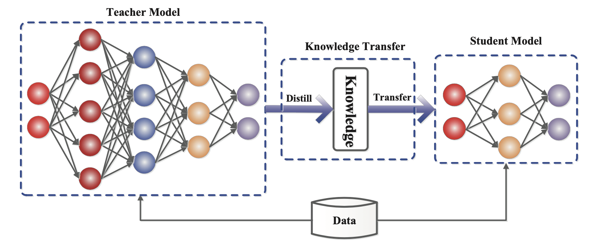Given a dataset, a student model is trained to mimic outputs of a teacher via distillation loss. Usually a neural network has a softmax layer; For example, a LLM outputs a probability distribution over tokens. Let’s denote the logits layer right before softmax as $\mathbf{z}_t$ and $\mathbf{z}_s$ for teacher and student models, respectively. The distillation loss minimizes the difference between two softmax outputs with a high temperature $T$. When ground truth labels $\mathbf{y}$ are known, we can combine it with a supervised learning objective between ground truth and the student’s soft logits using e.g. cross-entropy.
where $\lambda$ is a hyperparameter to balance between soft and hard learning objectives. A common choice for $\mathcal{L}_\text{distll}$ is KL divergence / cross entropy.
A successful early trial is DistilBERT (Sanh et al. 2019) that is able to reduce the parameters of a BERT by 40% while maintaining 97% performance of BERT on fine-tuned downstream tasks and running 71% faster. The loss of pre-training DistilBERT is a combination of soft distillation loss, supervised training loss (i.e. Masked language modeling loss $\mathcal{L}_\text{MLM}$ in the case of BERT) and a special cosine embedding loss to align the hidden state vectors between teacher and student.
Distillation can be easily combined with quantization, pruning or sparsification techniques, where the teacher model is the original full-precision, dense model and the student is quantized, pruned, or trimmed to have higher sparsity level.
Quantization
There are two common approaches for applying quantization on a deep neural network:
- Post-Training Quantization (PTQ): A model is first trained to convergence and then we convert its weights to lower precision without more training. It is usually quite cheap to implement, in comparison to training.
- Quantization-Aware Training (QAT): Quantization is applied during pre-training or further fine-tuning. QAT is able to attain better performance but requires extra computation resources and access to representative training data.
We should be aware of the gap between theoretical optimal quantization strategy and the hardware kernel support. Due to the lack of GPU kernel support for certain types of matrix multiplication (e.g. INT4 x FP16), not all the methods below result in speedup for the actual inference.
Challenges for Transformer Quantization
Many studies on Transformer model quantization have the same observation: A simple low-precision (e.g. 8-bit) post-training quantization leads to significant performance drop mainly due to the high dynamic ranges of activation and a naive activation quantization strategy fails to maintain the capacity.
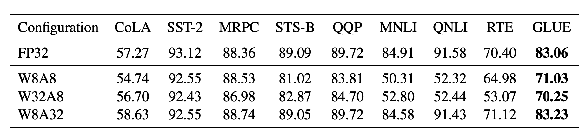Bondarenko et al. (2021) observed in a small BERT model that FFN’s input and output have very different dynamic ranges due to strong outliers in the output tensor. Therefore per-tensor quantization for the FFN’s residual sum is likely to cause a notable error.
As the model size continues to grow to billions of parameters, outlier features of high magnitude start to emerge in all transformer layers, causing failure of simple low-bit quantization. Dettmers et al. (2022) observed such a phenomenon for OPT models larger than 6.7B parameters. Larger models have more layers with extreme outliers and these outlier features have a significant impact on the model performance. The scale of activation outliers in a few dimensions can be ~100× larger than most of the other values.
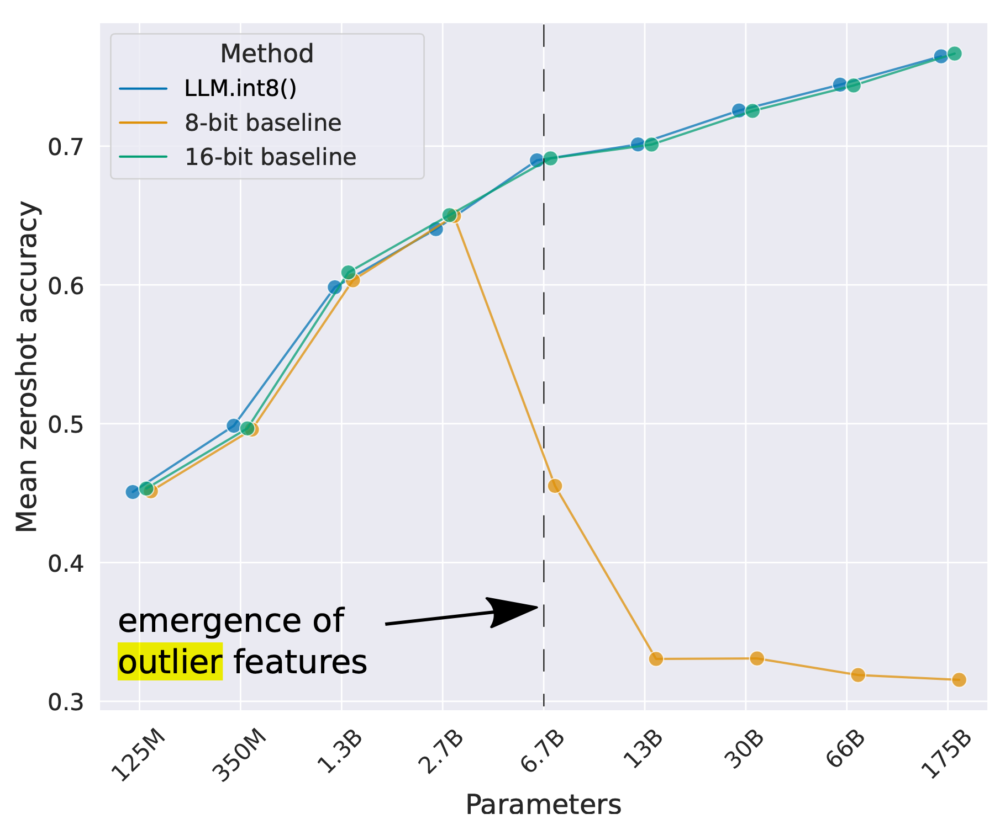Post-training quantization (PTQ)
Mixed-precision quantization
The most straightforward approach for resolving the above quantization challenge is to implement quantization at different precision for weights vs activation.
GOBO (Zadeh et al. 2020) is one of the first models to apply post-training quantization on transformers (i.e. a small BERT model). It assumes that model weights of each layer follow a Gaussian distribution and therefore detects outliers by tracking mean and standard deviation per layer. Outlier features remain in original form, while other values are split into multiple bins and only corresponding bin indices of weights and the centroid values are stored.
Based on the observation that only certain activation layers (e.g. residual connections after FFN) in BERT cause big performance drop, Bondarenko et al. (2021) adopted mixed-precision quantization by using 16-bit quantization on problematic activations but 8-bit on others.
Mixed-precision quantization in LLM.int8() (Dettmers et al. 2022) is implemented via two mixed-precision decompositions:
- Because matrix multiplication contains a set of independent inner products between row and column vectors, we can impose independent quantization per inner product: Each row and column are scaled by the absolution maximum values and then quantized to INT8.
- Outlier activation features (e.g. 20x larger than other dimensions) remain in FP16 but they represent only a tiny fraction of total weights. How to identify outliers is empirical.
Quantization at fine-grained granularity
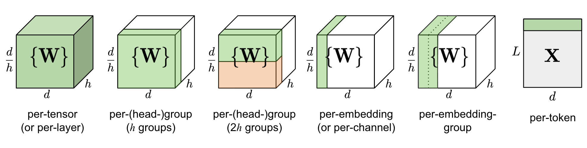Naively quantizing the entire weight matrix in one layer (“per-tensor” or “per-layer” quantization) is easiest to implement but does not lead to good granularity of quantization.
Q-BERT (Shen, Dong & Ye, et al. 2020) applied group-wise quantization to a fine-tuned BERT model, treating an individual matrix $W$ with respect to each head in MHSA (multi-head self-attention) as one group and then applies Hessian based mixed precision quantization.
Per-embedding group (PEG) activation quantization was motivated by the observation that outlier values only appear in a few out of $d$ (hidden state / model size) dimensions (Bondarenko et al. 2021). Per-embedding is pretty computationally expensive. In comparison, PEG quantization splits the activation tensor into several evenly sized groups along the embedding dimension where elements in the same group share quantization parameters. To ensure all outliers are grouped together, they apply a deterministic range-based permutation of embedding dimensions, where dimensions are sorted by their value ranges.
ZeroQuant (Yao et al. 2022) uses group-wise quantization for weights, same as in Q-BERT, and token-wise quantization for activation. To avoid expensive quantization and de-quantization computation, ZeroQuant built customized kernel to fuse quantization operation with its previous operator.
Second order information for quantization
Q-BERT (Shen, Dong & Ye, et al. 2020) developed Hessian AWare Quantization (HAWQ) for its mixed-precision quantization. The motivation is that parameters with higher Hessian spectrum (i.e., larger top eigenvalues) are more sensitive to quantization and thus require higher precision. It is essentially a way to identify outliers.
In another viewpoint, the problem of quantization is an optimization problem. Given a weight matrix $\mathbf{W}$ and an input matrix $\mathbf{X}$ , we want to find a quantized weight matrix $\hat{\mathbf{W}}$ to minimize the MSE:
$$ \hat{\mathbf{W}}^* = {\arg\min}_{\hat{\mathbf{W}}} | \mathbf{W}\mathbf{X} - \hat{\mathbf{W}}\mathbf{X}| $$
GPTQ (Frantar et al. 2022) treats the weight matrix $\mathbf{W}$ as a collection of row vectors ${\mathbf{w}}$ and applies quantization to each row independently. GPTQ iteratively quantizes more weights that are selected greedily to minimize the quantization error. The update on selected weights has a closed-form formula, utilizing Hessian matrices. Read more details in the paper and the OBQ (Optimal Brain Quantization; Frantar & Alistarh 2022) method if interested. GPTQ can reduce the bitwidth of weights in OPT-175B down to 3 or 4 bits without much performance loss, but it only applies to model weights not activation.
Outlier smoothing
It is known that activations are harder to quantize than weights in transformer models. SmoothQuant (Xiao & Lin 2022) proposed a smart solution to smooth outlier features from activations to weights via mathematically equivalent transformation and then enable quantization on both weights and activations (W8A8). Because of this, SmoothQuant has better hardware efficiency than mixed-precision quantization.
Considering a per-channel smooth factor $\mathbf{s}$, SmoothQuant scales the weights according to:
$$ \mathbf{Y} = (\mathbf{X} \text{diag}(\mathbf{s})^{-1}) \cdot (\text{diag}(\mathbf{s})\mathbf{W}) = \hat{\mathbf{X}}\hat{\mathbf{W}} $$
The smoothing factor can be easily fused into previous layers’ parameters offline. A hyperparameter $\alpha$ controls how much we migrate the quantization difficulty from activations to weights: $\mathbf{s} = \max (\vert \mathbf{X}_j \vert)^\alpha / \max( \vert \mathbf{W}_j \vert )^{1-\alpha}$. The paper found that $\alpha=0.5$ is a sweet spot for many LLMs in the experiments. For models with more significant outliers in activation, $\alpha$ can be adjusted to be larger.
Quantization-aware training (QAT)
Quantization-aware training fuses the quantization operation into the pre-training or fine-tuning process. It learns model weights in low-bit representation directly and leads to better performance at the cost of additional training time and computation.
The most straightforward approach is to fine-tune the model after quantization on a training dataset that is the same as or representative of the pre-training dataset. The training objective can be the same as the one for pre-training (e.g. NLL/MLM in general language model training) or specific to a downstream task that we care about (e.g. Cross entropy for classification).
Another approach is to consider the full-precision model as the teacher and the lower-precision model as the student, and then optimize the low-precision model with distillation loss. Distillation usually doesn’t need to use the original dataset; E.g. Wikipedia dataset is a good choice and even random tokens can give decent performance gain. The Layer-by-layer Knowledge Distillation (LKD; Yao et al. 2022) method quantizes the network layer by layer and uses its original, unquantized version as the teacher model. Given the same inputs, LKD minimizes the MSE between the multiplication with layer weights and the multiplication of quantized layer weights.
Pruning
Network pruning is to reduce the model size by trimming unimportant model weights or connections while the model capacity remains. It may or may not require re-training. Pruning can be unstructured or structured.
- Unstructured pruning is allowed to drop any weight or connection, so it does not retain the original network architecture. Unstructured pruning often does not work well with modern hardware and doesn’t lead to actual inference speedup.
- Structured pruning aims to maintain the dense matrix multiplication form where some elements are zeros. They may need to follow certain pattern restrictions to work with what hardware kernel supports. Here we focus on structured pruning to achieve high sparsity in transformer models.
A routine workflow to construct a pruned network has three steps:
- Train a dense network until convergence;
- Prune the network to remove unwanted structure;
- Optionally retrain the network to recover the performance with new weights.
The idea of discovering a sparse structure within a dense model via network pruning while the sparse network can still maintain similar performance is motivated by Lottery Ticket Hypothesis (LTH): A randomly initialized, dense, feed-forward network contains a pool of subnetworks and among them only a subset (a sparse network) are “winning tickets” which can achieve the optimal performance when trained in isolation.
How to prune?
Magnitude pruning is simplest yet quite effective pruning method - weights with smallest absolute values are trimmed. In fact, some studies (Gale et al. 2019) found that simple magnitude pruning approaches can achieve comparable or better results than complicated pruning methods, such as variational dropout (Molchanov et al. 2017) and $l_0$ regularization (Louizos et al. 2017). Magnitude pruning is simple to apply to large models and achieves reasonably consistent performance across a wide range of hyperparameters.
Zhu & Gupta (2017) found that large sparse models were able to achieve better performance than their small but dense counterparts. They proposed Gradual Magnitude Pruning (GMP) algorithm that increases the sparsity of a network gradually over the course of training. At each training step, weights with smallest absolute values are masked to be zeros to achieve a desired sparsity level $s$ and masked weights do not get gradient update during back-propagation. The desired sparsity level $s$ goes up with more training steps. The process of GMP is sensitive to the learning rate schedule, which should be higher than what’s used in dense network training, but not too high to prevent convergence.
Iterative pruning (Renda et al. 2020) iterates step 2 (prune) & step 3 (retrain) multiple times: Only a small fraction of weights are pruned and the model is retrained in each iteration. The process repeats until a desired sparsity level is reached.
How to retrain?
The retraining step can be simple fine-tuning using the same pre-training data or other task-specific datasets.
Lottery Ticket Hypothesis proposed a weight rewinding retraining technique: After pruning, the unpruned weights are reinitialized back to original values earlier in the training and then retrain with the same learning rate schedule.
Learning rate rewinding (Renda et al. 2020) only resets the learning rate back to its early value, while the unpruned weights stay unchanged since the end of the last train stage. They observed that (1) retraining with weight rewinding outperforms retraining with fine-tuning across networks and datasets and (2) learning rate rewinding matches or outperforms weight rewinding in all tested scenarios.
Sparsity
Sparsity is an effective way to scale up model capacity while keeping model inference computationally efficient. Here we consider two types of sparsity for transformers:
- Sparsified dense layers, including both self-attention and FFN layers.
- Sparse model architecture; i.e. via incorporating the Mixture-of-Experts (MoE) component.
N:M Sparsity via Pruning
N:M sparsity is a structured sparsity pattern that works well with modern GPU hardware optimization, in which $N$ out of every $M$ consecutive elements are zeros. For example, the sparse tensor core of Nvidia A100 GPU has support for 2:4 sparsity for faster inference (Nvidia 2020).
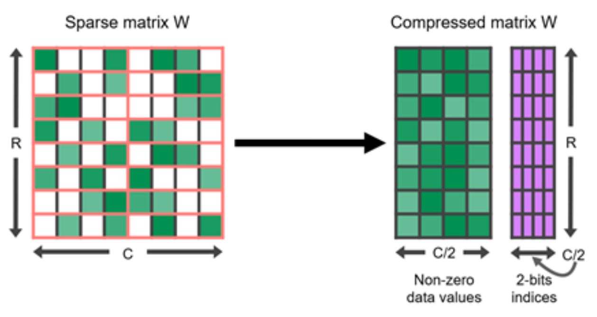To sparsify a dense neural network to follow a N:M structured sparsity pattern, Nvidia (2020) suggested using the three-step routine workflow for training a pruned network: train –> prune to satisfy 2:4 sparsity –> retrain.
Permuting columns can provide more options in the pruning process to maintain parameters of large magnitude or to satisfy a special restriction like N:M sparsity (Pool & Yu 2021). As long as paired axes of two matrices are permuted in the same order, the results of matrix multiplication would not change. For example,
(1) Within the self-attention module, if the same permutation order is applied on the axis 1 of query embedding matrix $\mathbf{Q}$ and the axis 0 of key embedding matrix $\mathbf{K}^\top$, the final result of matrix multiplication of $\mathbf{Q}\mathbf{K}^\top$ would stay the same.
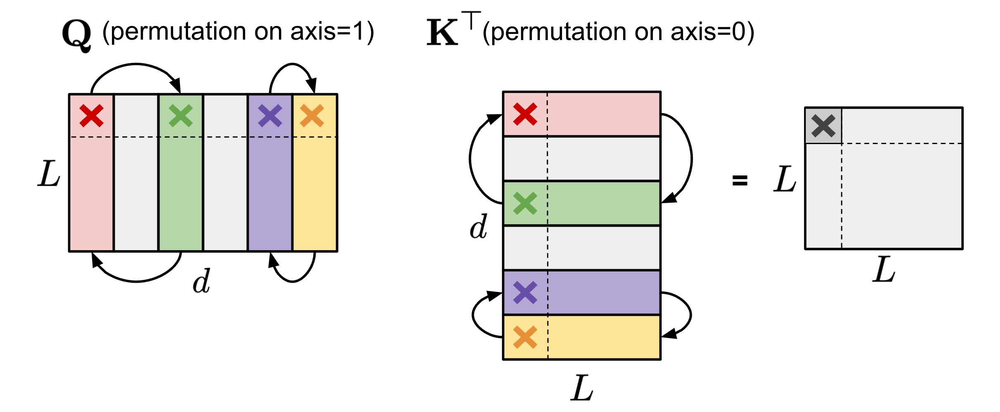(2) Within the FFN layer that contains two MLP layers and one ReLU non-linear layer, we can permute the first linear weight matrix $\mathbf{W}_1$ along the axis 1 and the second linear weight matrix $\mathbf{W}_2$ along the axis 0 in the same order.
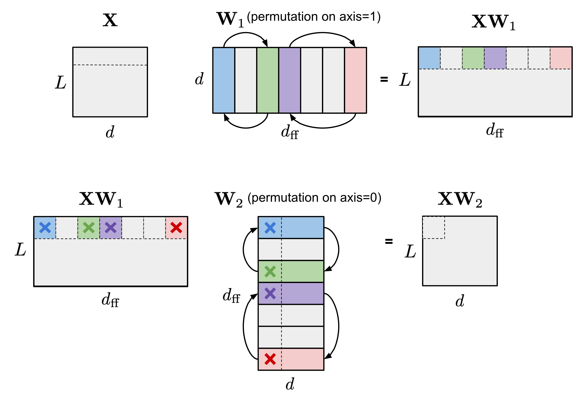To enforce N:M structured sparsity, let’s split the columns of one matrix into multiple slides of $M$ columns (named “stripe”) and we can easily observe that both the order of columns within each stripe and the order of stripes have no effect on the N:M sparsity restriction.
Pool & Yu (2021) proposed an iterative greedy algorithm to find optimal permutation that maximizes the weight magnitude for N:M sparsity. All pairs of channels are speculatively swapped and only the swap that leads to the greatest increase in magnitude is adopted, generating a new permutation and concluding a single iteration. Greedy algorithm may only find local minima, so they introduced two techniques to escape local minima:
- Bounded regressions: In practice two random channels are swapped, up to a fixed number of times. The solution search is limited to a depth of only one channel swap to keep the search space broad and shallow.
- Narrow, deep search: Choose multiple stripes and optimize them at the same time.
The network can achieve better performance if it was permuted before pruning, compared to pruning the network in its default channel order.
To train a model with N:M sparsity from scratch, Zhou & Ma, et al. (2021) extended STE (Straight-Through Estimator; Bengio et al. 2013), which is commonly used for back-propagation update in model quantization, to work for magnitude pruning and sparse parameter update.
STE computes the gradients of dense parameters wrt the pruned network $\widetilde{W}$, $\partial \mathcal{L}/\partial \widetilde{W}$, and applies that to the dense network $W$ as an approximation:
$$ W_{t+1} \gets W_t - \gamma \frac{\partial\mathcal{L}}{\partial\widetilde{W}} $$
The extended version, SR-STE (Sparse-refined STE), updates the dense weights $W$ by:
$$ W_{t+1} \gets W_t - \gamma \frac{\partial\mathcal{L}}{\partial\widetilde{W}} + \lambda_W (\bar{\mathcal{E}} \odot W_t) $$ where $\bar{\mathcal{E}}$ is the mask matrix for $\widetilde{W}$ and $\odot$ is element-wise multiplication. SR-STE is proposed to prevent large change in the binary mask by (1) restricting the values of weights pruned in $\widetilde{W}_t$, and (2) promoting the non-pruned weights in $\widetilde{W}_t$.
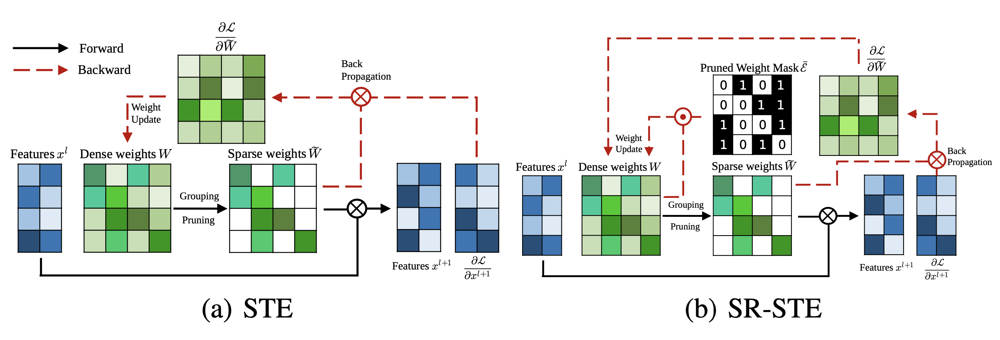Different from STE or SR-STE, the Top-KAST (Jayakumar et al. 2021) method can preserve constant sparsity throughout training in both the forward and backward-passes but does not require forward passes with dense parameters or dense gradients.
At one training step $t$, Top-KAST processes as follows:
- Sparse forward pass: Select a subset of parameters $A^t \subset \Theta$, containing top-$K$ parameters by magnitude by each layer, restricted to top $D$-proportion of weights. The parameterization $\alpha^t$ at time $t$ has parameters zeroed out if it is not in $A^t$ (active weights).
where $\text{TopK}(\theta, x)$ selected top $x$ proportion of weights from $\theta$ based on magnitude.
- Sparse backward pass: Then apply gradients to a larger parameter subset $B \subset \Theta$ where $B$ contains $(D+M)$-proportion of weights and $A \subset B$. Updating a larger proportion of weights enables more effective exploration of different pruning masks, making it more likely to cause permutations in the top $D$-proportion active weights.
Training is split into two stages and the additional coordinates in the set $B \setminus A$ controls how much exploration is brought in. The amount of exploration is expected to diminish gradually through the training process and the mask eventually stabilizes.
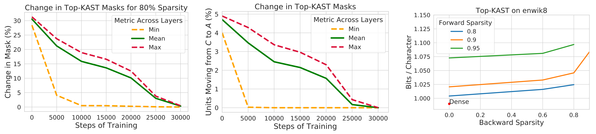To prevent rich-get-richer phenomenon, Top-KAST penalizes the magnitude of active weights via a L2 regularization loss to encourage more exploration of new items. Parameters in $B \setminus A$ are penalized more than $A$ for a higher selection bar during updates to stabilize the mask.
Sparsified Transformer
Scaling Transformer (Jaszczur et al. 2021) sparsifies both self-attention and FFN layers in transformer architecture, achieving 37x speedup for single-example inference.
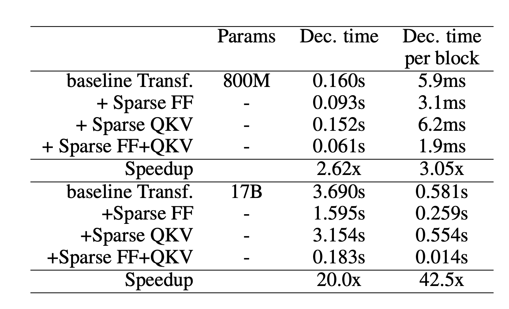Sparse FFN layer: Each FFN layer contains 2 MLP and one ReLU in-between. Because ReLU will introduce a lot of zeros, they implement a fixed structure on activations to enforce only 1 non-zero value in one block of $N$ elements. The sparsity pattern is dynamic, different for each token.
where each activation in $Y_\text{sparse}$ corresponds to one column in $W_1$ and one row in $W_2$. The controller is implemented as a low-rank bottleneck dense layer, $C_1 \in \mathbb{R}^{d_\text{model} \times d_\text{lowrank}}, C_2 \in \mathbb{R}^{d_\text{lowrank} \times d_\text{ff}}$ and $d_\text{lowrank} = d_\text{model} / N$. It uses $\arg\max$ for inference to select which columns should be non-zero and Gumbel-softmax trick (Jang et al. 2016) during training. Because we can compute $\text{Controller}(x)$ before loading FFN weight matrices, we know which columns will be zeroed out and thus choose not to load them into memory for inference speedup.
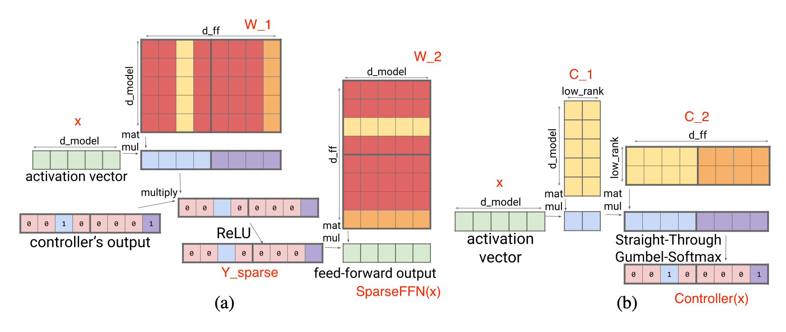Sparse QKV (attention) layer: In the attention layer, the dimensionality $d_\text{model}$ is divided into $S$ modules, each of size $M=d_\text{model} /S$. To make sure each subdivision can access any part of the embedding, Scaling Transformer introduces a multiplicative layer (i.e., a multiplication layer multiplies inputs from multiple neural network layers element-wise) which can represent arbitrary permutation but contains fewer parameters than a dense layer.
Given an input vector $x \in \mathbb{R}^{d_\text{model}}$, the multiplicative layer outputs $y \in \mathbb{R}^{S \times M}$:
The output of the multiplicative layer is a tensor of size $\in \mathbb{R}^{\text{batch size}\times \text{length} \times S \times M}$. It then gets processed by a two-dimensional convolutional layer, where $\text{length}$ and $S$ are treated as the height and width of an image. Such a convolution layer further reduces the parameter count and computation time of attention layer.
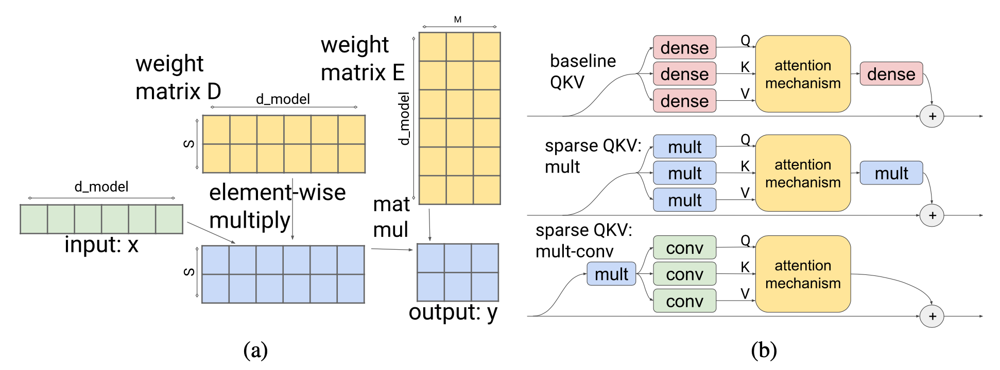To better work with long sequences, Scaling Transformer is further equipped with LSH (locality-sensitive hashing) attention from Reformer (Kitaev, et al. 2020) and FFN block recurrence, resulting in Terraformer.
Mixture-of-Experts
Mixture-of-experts (MoE) models depend on a collection of “expert” networks and each example only activates a subset of networks to get predictions. The idea originated back to the 1990s (Jacobs et al. 1991) and is strongly related to ensemble methods. For details on how to incorporate MoE module into transformer, please check my previous post on large model training techniques and a survey paper on MoE by Fedus et al. 2022.
With MoE architecture, only partial parameters are utilized at decoding time and therefore it saves inference cost. The capacity of each expert can be adjusted with a hyperparameter, capacity factor $C$, and the expert capacity is defined as:
where top-$k$ experts are selected per token. Larger $C$ leads to higher expert capacity and improved performance but more expensive computationally. When $C>1$, a slack capacity is added; otherwise, when $C<1$, the routing network needs to ignore some tokens.
Routing Strategy Improvement
MoE layer has a routing network to assign a subset of experts for each input token. The routing strategy in vanilla MoE models is to route each token toward preferred experts differently as they come up in the natural order. If a token is routed to experts that have reached their capacity, the token would be marked “overflowed” and skipped.
V-MoE (Vision MoE; Riquelme et al. 2021) adds MoE layers into ViT (Vision Transformer). It matches the performance of previous SoTA but only requires half of inference compute. V-MoE can be scaled up to 15B parameters. Their experiments used $k=2$, 32 experts and every-2 expert placement (meaning that MoEs are placed in every other layer).
Since each expert has a limited capacity, some important and informative tokens may have to be discarded if they come up too late in the predefined sequence order (e.g. the order of words in a sentence, or the order of image patches). To avoid such a drawback in the vanilla routing scheme, V-MoE adopts BPR (Batch Priority Routing) to assign experts to tokens with a high priority score first. BPR computes a priority score (max or sum of top-$k$ router scores) per token before expert assignment and alters the order of tokens accordingly. This guarantees that the expert capacity buffer would be fulfilled with key tokens first.
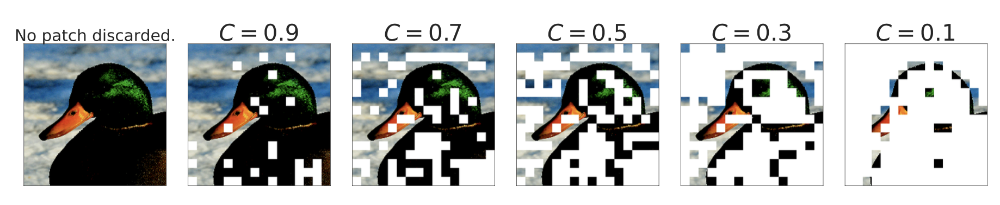BPR works much better than vanilla routing when $C\leq 0.5$, where the model starts dropping a significant amount of tokens. It capacitates the model to be competitive with the dense network even at quite low capacities.
When looking into how to interpret image class-expert association, they observed that early MoE layers are more general, while later MoE layers could be specialized for a few image classes.
Task MoE (Task-level Mixture-of-Experts; Kudugunta et al. 2021 ) takes the task information into consideration and routes tokens at the task level instead of the word or token level for machine translation. They used MNMT (multilingual neural machine translation) as an example and group translation tasks based on the target language or language pairs.
Token level routing is dynamic and the routing decision for each token is made disjointly. Hence, at inference time, the server needs to preload all the experts. In comparison, task level routing is static given a fixed task, so the inference server for one task only needs to preload $k$ experts (assuming top-$k$ routing). According to their experiments, Task MoE can achieve similar performance gain as token MoE compared to dense model baseline with 2.6x higher peak throughput and 1.6% of the decoder size.
Task level MoE is essentially to categorize a distribution of tasks according to predefined heuristics and incorporate such human knowledge into the router. When such heuristics do not exist (e.g. consider a general sentence continuation task), it would not be straightforward how to utilize Task MoE.
PR-MoE (Pyramid residual MoE; Rajbhandari et al. 2022) has each token pass one fixed MLP and one chosen expert. Due to the observation that MoE at later layers is more beneficial, PR-MoE adopts more exports at later layers. DeepSpeed library implements a flexible multi-expert, multi-data parallelism to enable training PR-MoE with different numbers of experts across layers.
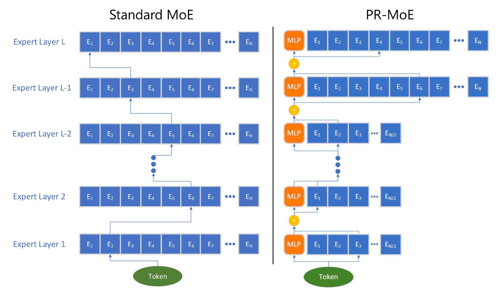Kernel Improvement
Expert networks can be hosted on different devices. However, when the number of GPUs increases, the number of experts per GPU decreases and the communication between experts (“All-to-all”) grows to be more expensive. All-to-all communication between experts across a number of GPUs relies on P2P APIs of NCCL, which cannot saturate the bandwidth of high-speed links (e.g. NVLink, HDR InfiniBand) at a large scale, as individual chunk gets smaller with more nodes used. The existing all-to-all algorithm performs poorly at large scale with a small workload. There are a variety of kernel improvements to enable more efficient MoE computation, such as making all-to-all communication cheaper/faster.
Both the DeepSpeed library (Rajbhandari et al. 2022) and TUTEL (Hwang et al. 2022) implemented a tree-based hierarchical all-to-all algorithm, which runs an intra-node all-to-all followed by an inter-node all-to-all. It reduces the communication hops from $O(G)$ to $O(G_\text{node} + G / G_\text{node})$, where $G$ is the total number of GPU nodes and $G_\text{node}$ is the number of GPU cores per node. Although the communication volume is doubled in such implementation, it enables better scaling with small batches at large scale as the bottleneck is on latency instead of communication bandwidth when the batch size is small.
DynaMoE (Kossmann et al. 2022) uses dynamic recompilation to adapt the computational resources to dynamic workloads among experts. The RECOMPILE mechanism compiles the computation graph from scratch and only reallocates resources when needed. It measures how many samples are assigned to each expert and adjusts their capacity factors $C$ dynamically, in order to reduce the memory and computation requirements at run time. Based on the observation that sample-expert assignments converge early in training, sample assignment caching is introduced after convergence and then RECOMPILE is used to eliminate the dependency between the gating network and experts.
Architectural Optimization
The survey paper on Efficient Transformers (Tay et al. 2020) reviewed a collection of new transformer architectures with improvement for better computational and memory efficiency. Strongly recommend a read. You can also check out my post “The Transformer Family Version 2.0” for introduction to a diverse set of transformer archiecture improvements in depth, including changes to make the model cheaper to run.
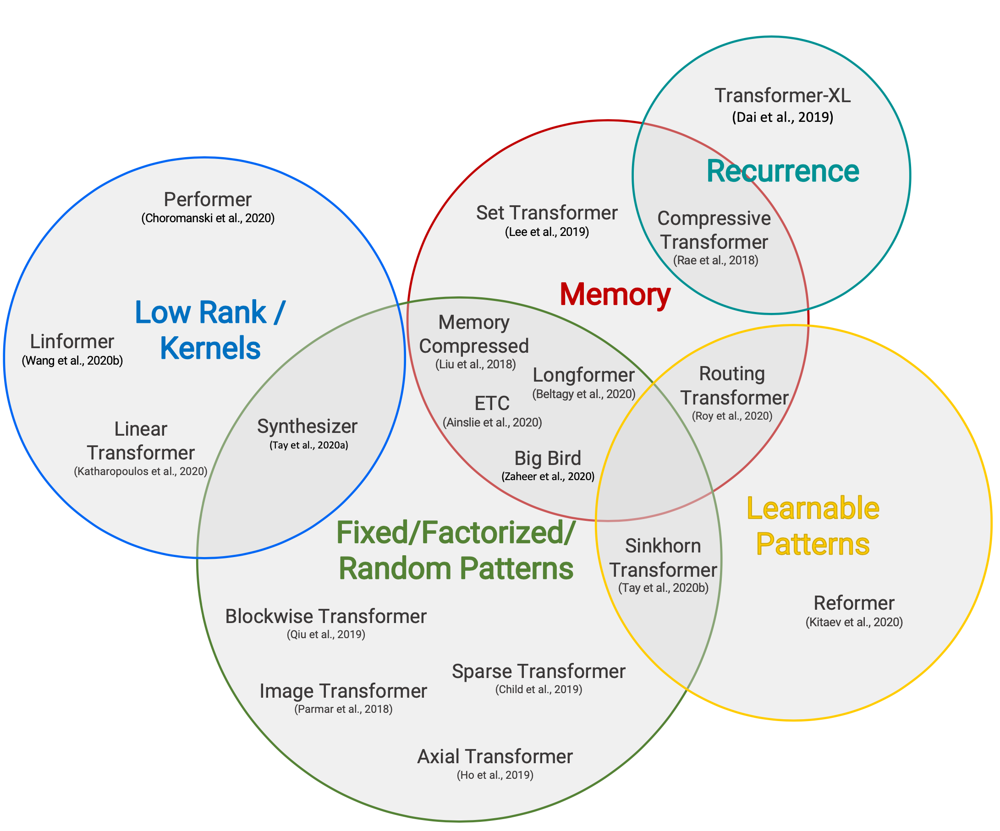(Image source: Tay et al. 2020)
Since the self-attention mechanism has quadratic time and memory complexity and that is the main bottleneck for better transformer decoding efficiency, all the efficient transformer models have applied some form of sparsity to the otherwise dense attention layer. Here only lists a high-level overview, several derived from Tay et al. 2020.
Sparse Attention Patterns
-
Fixed Patterns limit the field of view for the attention matrix, using predefined, fixed patterns.
- Chunk input sequences into fixed blocks, such as Blockwise Attention;
- Image Transformer uses local attention;
- Sparse Transformer uses strided attention patterns.
-
Combined Patterns learn to sort/cluster the input tokens - enabling a more optimal global view of the sequence while maintaining the efficiency benefits of fixed patterns.
- Sparse Transformer combines strided and local attention;
- Given a high dimensional input tensor, instead of applying attention to the flattened version of the input, Axial Transformer applies multiple attentions, each along a single axis of the input tensor.
- ETC, Longformer and Big Bird combines local and global context, as well as strided or random attention.
-
Learnable Patterns identify the optimal attention pattern via learning.
- Reformer clusters tokens into clusters based on hash-based similarity (LSH);
- Routing Transformer runs $k$-means clustering on tokens;
- Sinkhorn Sorting Network learns to sort blocks of input sequence.
Recurrence
Recurrence mechanism connects multiple blocks/segments via recurrence.
- Transformer-XL makes use of longer context by reusing hidden states between segments.
- Universal Transformer combines self-attention with the recurrent mechanism in RNN.
- Compressive Transformer is an extension of Transformer-XL with additional memory, containing a set of memory slots for past activiations and compressive memory slots for compressed activations. Whenever the model accepts a new input segment, the oldest activations in the primary memory are moved to the compressed memory where a compression function is applied.
Memory Saving Designs
Memory saving designs refer to changes of the architecture to use less memory.
- Linformer projects the length dimension of keys and values to a lower-dimensional representation ($N \to k$) and thus the memory complexity is reduced from $N \times N$ to $N \times k$.
- Shazeer (2019) proposed multi-query attention which has the keys and values shared across different attention “heads”, greatly reducing the size of these tensors and the memory cost.
- Random feature attention and Performer use kernel methods to achieve a cheaper mathematical format of the self-attention mechanism.
Adaptive Attention
Adaptive attention enables the model to learn the optimal attention span or decide on when to do early exiting for different input tokens.
- Adaptive Attention Span trains the model to learn the optimal attention span per token per head via a soft mask between the token and other keys.
- Universal Transformer incorporates recurrent mechanism and uses ACT (Adaptive computation time) to dynamically decide the number of recurrent steps.
- Depth-Adaptive Transformer and CALM learns when to early exit the computation layers per token using some confidence measures to achieve good performance-efficiency tradeoffs.
Citation
Cited as:
Weng, Lilian. (Jan 2023). Large Transformer Model Inference Optimization. Lil’Log. https://lilianweng.github.io/posts/2023-01-10-inference-optimization/.
Or
@article{weng2023inference,
title = "Large Transformer Model Inference Optimization",
author = "Weng, Lilian",
journal = "Lil'Log",
year = "2023",
month = "Jan",
url = "https://lilianweng.github.io/posts/2023-01-10-inference-optimization/"
}
References
[1] Bondarenko et al. “Understanding and overcoming the challenges of efficient transformer quantization” ACL 2021.
[2] Dettmers et al. “LLM.int8(): 8-bit Matrix Multiplication for Transformers at Scale” NeuriPS 2022
[3] Zadeh et al. “Gobo: Quantizing attention-based NLP models for low latency and energy efficient inference.” MICRO 2020
[4] Shen, Dong & Ye, et al. “Q-BERT: Hessian based ultra low precision quantization of BERT” AAAI 2020.
[5] Yao et al. “ZeroQuant: Efficient and affordable post-training quantization for large-scale transformers” arXiv preprint arXiv:2206.01861 (2022).
[6] Frantar et al. “GPTQ: Accurate Quantization for Generative Pre-trained Transformers” arXiv preprint arXiv:2210.17323 (2022).
[7] Xiao & Lin “SmoothQuant: Accelerated sparse neural training: A provable and efficient method to find N:M transposable masks.” arXiv preprint arXiv:2211.10438 (2022). | code
[8] Pool & Yu. “Channel Permutations for N:M Sparsity.” NeuriPS 2021. | code
[9] Zhou & Ma, et al. “Learning N:M fine-grained structured sparse neural networks from scratch.” arXiv preprint arXiv:2102.04010 (2021).
[10] Jayakumar et al. “Top-KAST: Top-K Always Sparse Training.” NeuriPS 2020.
[11] Nvidia. “Nvidia A100 tensor core GPU architecture.” 2020.
[12] Gale, Elsen & Hooker “The State of Sparsity in Deep Neural Networks.” arXiv preprint arXiv:1902.09574 (2019).
[13] Zhu & Gupta. “To Prune, or Not to Prune: Exploring the Efficacy of Pruning for Model Compression.” arXiv preprint arXiv:1710.01878 (2017).
[14] Renda et al. “Comparing rewinding and fine-tuning in neural network pruning.” arXiv preprint arXiv:2003.02389 (2020).
[15] Zhou & Ma, et al. “Learning N:M fine-grained structured sparse neural networks from scratch.” arXiv preprint arXiv:2102.04010 (2021).
[16] Pool & Yu. “Channel Permutations for N:M Sparsity.” NeuriPS 2021. | code
[17] Jaszczur et al. “Sparse is Enough in Scaling Transformers.” NeuriPS 2021.
[18] Mishra et al. “An Survey of Neural Network Compression.” arXiv preprint arXiv:1710.09282 (2017).
[19] Fedus et al. “A Review of Sparse Expert Models in Deep Learning.” arXiv preprint arXiv:2209.01667 (2022)..
[20] Riquelme et al. “Scaling vision with sparse mixture of experts.” NeuriPS 2021.
[21] Kudugunta et al. “Beyond Distillation: Task-level Mixture-of-Experts for Efficient Inference.” arXiv preprint arXiv:2110.03742 (2021).
[22] Rajbhandari et al. “DeepSpeed-MoE: Advancing mixture-of-experts inference and training to power next-generation ai scale.” arXiv preprint arXiv:2201.05596 (2022).
[23] Kossmann et al. “Optimizing mixture of experts using dynamic recompilations.” arXiv preprint arXiv:2205.01848 (2022).
[24] Hwang et al. “Tutel: Adaptive mixture-of-experts at scale.” arXiv preprint arXiv:2206.03382 (2022). | code
[25] Noam Shazeer. “Fast Transformer Decoding: One Write-Head is All You Need.” arXiv preprint arXiv:1911.02150 (2019).
[26] Tay et al. “Efficient Transformers: A Survey.” ACM Computing Surveys 55.6 (2022): 1-28.
[27] Pope et al. “Efficiently Scaling Transformer Inference.” arXiv preprint arXiv:2211.05102 (2022).
[28] Frankle & Carbin. “The Lottery Ticket Hypothesis: Finding Sparse, Trainable Neural Networks” ICLR 2019.
[29] Elabyad et al. “Depth-Adaptive Transformer” ICLR 2020.
[30] Schuster et al. “Confident Adaptive Language Modeling” arXiv preprint arXiv:2207.07061 (2022).
[31] Gou et al. “https://arxiv.org/abs/2006.05525” arXiv preprint arXiv:2006.05525 (2020).
[32] Hinton et al. “Distilling the Knowledge in a Neural Network” NIPS 2014.
[33] Sanh et al. “DistilBERT, a distilled version of BERT: smaller, faster, cheaper and lighter” Workshop on Energy Efficient Machine Learning and Cognitive Computing @ NeuriPS 2019.